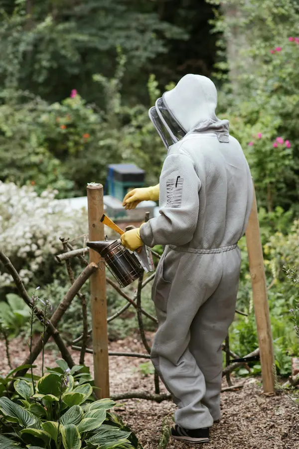

Viral Diseases of Honeybees in the UK – Signs, Varroa Links and What Beekeepers Can Do

Viral diseases are an important part of the honey bee health picture, but they can feel mysterious because we rarely see the viruses themselves – only the effects on bees. Many UK colonies carry several viruses at low levels without obvious damage. Problems usually appear when bees are under stress, especially from parasitic mites such as varroa, poor nutrition or other diseases. If you want the short version before diving deeper, start with the varroa overview.
This page focuses on the main viral diseases that beekeepers are likely to hear about: deformed wing virus, acute and chronic bee paralysis and sacbrood, with brief notes on some of the less common viruses. It is designed to be beginner friendly but detailed enough to be useful if you are working towards BBKA-style exams or simply want a deeper understanding. If you are starting from symptoms and are not yet sure whether you are dealing with a virus, varroa pressure or another colony problem, try the interactive colony health triage tool.
Use this guide alongside the bee diseases and pests overview, the parasitic mites page, the varroa overview, varroa management and hive hygiene to build a joined-up approach to colony health.
Contents
- How viral diseases fit into bee health
- Deformed Wing Virus (DWV) – varroa’s main passenger
- Acute Bee Paralysis Virus (ABPV)
- Chronic Bee Paralysis Virus (CBPV)
- Sacbrood Virus (SBV)
- Other viral threats (BQCV, IAPV, KBV and others)
- Inspection checklist and red-flag signs
- When to seek official advice or diagnosis
How Viral Diseases Fit into the Bigger Bee Health Picture
Most bee viruses are RNA viruses that circulate quietly in colonies. In many cases they only cause problems when something else is weakening the bees – especially high varroa levels, but also starvation, chill, overcrowding or heavy pesticide exposure. In practice, this means viral disease pages should nearly always send you back to the varroa management section.
- Varroa destructor feeds on developing pupae and adult bees and injects viruses directly into their bodies. See parasitic mites for the wider mite picture, or the varroa overview for a quicker introduction.
- Stressed bees have a weaker immune response, so viruses that were previously “background noise” can suddenly flare up.
- Multiple viruses are often present at the same time, so lab tests may show a “virus soup” rather than one clear culprit.
For this reason, the most effective strategy is usually not to treat viruses individually, but to control the underlying drivers — especially varroa. In practice, that means this page connects directly to varroa management, varroa monitoring methods and seasonal decision-making in August.
- keep varroa populations under control using an integrated approach (monitoring, thresholds, treatments and biotechnical methods)
- maintain good hive hygiene and reduce unnecessary stress
- support colonies with adequate nutrition and sensible stocking levels for the forage available.
While viral diseases themselves are not treated directly with medicines, managing the underlying causes often involves authorised varroa treatments. Where veterinary medicines are used as part of viral disease management, it is good practice to record what was used, when, and which colonies were treated. See veterinary medicine records for guidance.
Deformed Wing Virus (DWV) – Varroa’s Most Familiar Passenger
Deformed wing virus (DWV) is the classic example of a varroa-associated virus. It is found worldwide and is very common in UK colonies. Many hives carry DWV at low levels without obvious symptoms, but visible damage appears once varroa populations climb. This is why the relationship between viral disease and the varroa overview, parasitic mites and the main varroa management pathway matters so much.
Typical signs of DWV
- Adult bees emerging with short, shrivelled or twisted wings.
- Small, dark, “crawling” bees that cannot fly and collect outside the hive entrance.
- Overall reduction in worker lifespan, leading to dwindling populations through the season.
Individual bees with deformed wings will not recover. The aim is to protect the wider colony rather than “treat” the affected adults.
Management priorities for DWV
- Monitor varroa accurately. Use methods such as sugar rolls, alcohol washes or carefully interpreted drop counts.
- Act early on high mite levels. Choose an appropriate treatment or biotechnical method from your varroa management plan, supported by the varroa overview and monitoring methods.
- Support good nutrition. Ensure colonies have adequate pollen and nectar or syrup, especially around brood rearing.
- Improve genetics over time. Re-queening with healthy, well-bred queens can improve natural resistance and temperament.
When you see a few bees with deformed wings but varroa counts are low and the colony is otherwise strong, note it in your records and continue monitoring. If you are seeing many deformed bees and numbers are falling, treat the situation as a sign of serious varroa pressure. This becomes especially important in late summer, when virus pressure and mite pressure can combine to damage the winter bee generation.
Acute Bee Paralysis Virus (ABPV)
Acute Bee Paralysis Virus (ABPV) is one of a group of “paralysis viruses” that can cause sudden adult bee deaths. It is strongly associated with heavy varroa infestations and sometimes appears as part of a collapse where bees simply seem to vanish. If this is what you are seeing, check the parasitic mites page and go straight into varroa management.
Typical signs of ABPV
- Adult bees found in front of the hive or on the ground, often with trembling, shivering or inability to fly.
- Bees may hold their wings out at odd angles or appear “stuck” against the body.
- Rapid loss of foragers, with colonies suddenly weakening even though brood may still be present.
Symptoms may resemble pesticide poisoning or other paralysis viruses, so it is not always possible to diagnose ABPV in the field without laboratory testing.
Management focus for ABPV
There is no direct antiviral treatment that beekeepers can apply. Instead, focus on the underlying drivers:
- Check varroa levels and bring them down quickly if they are high.
- Ensure good ventilation and nutrition so the colony can rebuild.
- Reduce additional stress – avoid unnecessary manipulations and ensure adequate stores.
- If losses are heavy or sudden, consider taking samples for testing via your local association, Bee Inspector or BeeBase guidance.
Chronic Bee Paralysis Virus (CBPV)
Chronic Bee Paralysis Virus (CBPV) tends to produce more distinct “textbook” signs than some other viruses, but it can still be confused with other causes. It mainly affects adult worker bees and is sometimes seen in spring and early summer when colonies are building up.
Two common “syndromes” of CBPV
- Type 1 – trembling and crawling: Bees shake, tremble and often crawl on top of the frames or outside the hive, unable to fly.
- Type 2 – shiny black bees: Hair is lost from the thorax and abdomen, giving a dark, greasy, “black bee” appearance. These bees may be attacked by their nestmates at the entrance.
These two patterns can occur together, and numbers can build rapidly. Colonies may look normal one week and then show obvious piles of crawling or black bees the next.
What can beekeepers do about CBPV?
- Reduce stress and crowding. Consider adding supers or adjusting space if colonies are very congested.
- Improve ventilation (e.g. good crown board and floor ventilation) to avoid excessively damp or humid conditions.
- Maintain good hygiene – avoid swapping comb or equipment between colonies and follow your hive hygiene routine.
- Manage varroa sensibly. While CBPV can occur without severe varroa, a high mite load will always make matters worse, so keep your monitoring methods and varroa management plan up to date.
- In persistent or severe cases, some beekeepers choose to re-queen with healthy, calm stock.
Because CBPV signs can overlap with other issues (pesticides, other viruses, chronic stress), obtaining an official diagnosis through your Regional Bee Inspector or BeeBase guidance can be very helpful if you are unsure.
Sacbrood Virus (SBV)
Sacbrood virus (SBV) mainly affects larvae. It is very common and often appears as a minor issue that colonies clear themselves. Problems arise when it becomes widespread or is confused with more serious brood diseases.
Recognising sacbrood in the comb
- Affected larvae die just before pupation and may appear as elongated, fluid-filled “sacs” inside the cell.
- The skin becomes tough and can sometimes be removed from the cell as a complete sac-like bag.
- Colour changes from pearly white to pale yellow then grey as the larva dries.
- There may be some perforated or sunken cappings, but usually not the strong smell or ropiness associated with foulbrood.
Sacbrood can often be confused with early or mild foulbrood. If you have any doubt about what you are seeing, always follow official guidance and seek inspection rather than guessing.
Managing sacbrood
- In a strong colony, mild sacbrood often clears on its own as healthy workers remove affected larvae.
- Improve nutrition and reduce stress – avoid unnecessary swarm control manipulations while the colony is struggling.
- Keep good records and photos so you can track whether the pattern is improving or worsening.
- If the pattern is extensive or persistent and you are worried about foulbrood, contact your local Bee Inspector for advice and possible testing.
Other Viral Threats – BQCV, IAPV, KBV and More
Modern laboratory tests often find a whole suite of viruses in bee samples. Some of the names you may hear include:
- Black Queen Cell Virus (BQCV) – often associated with queen rearing and can be linked with Nosema infections or poor hygiene.
- Israeli Acute Paralysis Virus (IAPV) and Kashmir Bee Virus (KBV) – paralysis-type viruses seen in various countries, sometimes linked with colony losses.
- Other named viruses and “variants” which may be reported in lab results but are still being researched.
For the practical beekeeper, the key point is that most of these viruses are managed through the same core principles: varroa control, hygiene, nutrition and sensible stock management. You normally do not need a different plan for each virus. In other words, this page should usually send you back toward varroa overview, varroa management and parasitic mites.
Inspection Checklist – Possible Viral Problems
During a routine inspection you are not expected to diagnose every virus by name, but you can train yourself to notice patterns that suggest viral involvement.
- Adult bees – deformed wings, trembling, crawling bees, shiny black “hairless” bees, unusually high numbers of dead adults outside the hive.
- Brood pattern – scattered brood with many empty cells, larvae that die before capping or just after capping, sac-like larvae or unusual colour changes.
- Colony strength – is the population dropping faster than expected for the season despite good stores?
- Varroa levels – recent counts, presence of mites on adult bees or pupae, evidence of failed varroa treatments.
- Recent stress – weather extremes, forage gaps, movement between apiaries, combining colonies or heavy manipulations.
If several of these factors are present together, viral disease is likely to be part of the picture even if you cannot name the exact virus. If you need help narrowing down what you are seeing before diving into detailed disease pages, use the colony health triage tool, then move into parasitic mites, varroa overview and varroa management.
When to Seek Official Advice or Diagnosis
Remember that viral diseases themselves are not notifiable in the UK in the same way that American foulbrood and European foulbrood are, but they often appear alongside other problems.
- If you see unfamiliar brood changes and are unsure whether foulbrood is involved, contact your local Bee Inspector for guidance.
- For persistent or severe paralysis or deformed wings despite good varroa control, consider seeking help through your association’s disease officer or BeeBase information.
- Keep detailed records – including dates, photos and your varroa monitoring data – so you can share a clear picture with anyone helping you.
Official resources such as BeeBase, local association teaching apiaries and experienced mentors are invaluable when you are learning to recognise disease patterns; this page is intended to sit alongside that practical, hands-on support.
For a wider context on bee health, you may also find it helpful to review the main bee diseases and pests overview, start with the colony health triage tool if the symptoms are still unclear, and then move into the core varroa pathway via parasitic mites, the varroa overview and varroa management. It also helps to read the individual pages on bacterial diseases and bee pests.